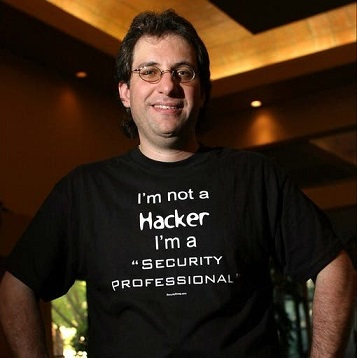
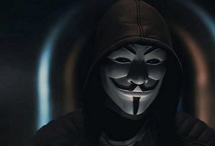

Kevin Mitnick
Kevin Mitnick, una figura representativa del pirateo en Estados Unidos, inició sus actividades cuando aún era un adolescente. En 1981, fue acusado de robar manuales de computadora a Pacific Bell. En 1982, pirateó el Comando de Defensa de Estados Unidos (NORAD), que inspiró la película "Juegos de guerra" de 1983. En 1989, pirateó la red de Digital Equipment Corporation (DEC) y realizó copias de su software. Por aquel entonces, como DEC era un fabricante líder de equipos informáticos, esta jugada dio a conocer a Mitnick. Posteriormente, fue arrestado, condenado y enviado a prisión. Durante su período de libertad condicional, pirateó los sistemas de correo de voz de Pacific Bell.
En el transcurso de su carrera como hacker, Mitnick no usó para provecho personal el acceso ni los datos que obtuvo. Aunque generalmente se cree que llegó a obtener el control total de la red de Pacific Bell, Mitnick no intentó aprovecharse de los resultados; al parecer, solo quería probar que podía hacerlo. Se emitió una orden judicial para arrestarlo por el incidente con Pacific Bell, pero Mitnick huyó y permaneció oculto durante más de dos años. Cuando fue atrapado, fue sentenciado a prisión por múltiples cargos de fraude electrónico e informático. Al final, Mitnick se convirtió en un hacker "bueno", pero según Wired, en 2014 lanzó al mercado "Mitnick's Absolute Zero Day Exploit Exchange" (Intercambio absoluto de exploits de día cero de Mitnick), que vende exploits de software crítico sin parches al mejor postor.

Anonymous
Anonymous inició sus actividades en 2003 en tablones de mensajes de 4chan en un foro sin nombre. El grupo evidencia poca organización y se concentra en cierta manera en el concepto de justicia social. Por ejemplo, en 2008, manifestó su desacuerdo con la Iglesia de la Cientología y comenzó a inhabilitar sus sitios web, lo que afectó negativamente a su posicionamiento en Google y saturó sus máquinas de fax con imágenes en negro. En marzo de 2008, un grupo de Anonymous llevó a cabo una marcha frente a centros de Cientología de todo el mundo usando la ahora famosa máscara de Guy Fawkes. Como señaló The New Yorker, aunque el FBI y otros organismos de cumplimiento de la ley han intentado seguir el rastro de algunos de los miembros más prolíficos del grupo, la ausencia de una jerarquía real convierte en casi imposible el objetivo de eliminar a Anonymous como entidad
El nombre de Anonymous en sí mismo está inspirado en el anonimato que perciben los usuarios cuando publican comentarios e imágenes en Internet. El uso del término, en el sentido de una identidad compartida, empezó en los tablones de imágenes (en inglés: imageboards) donde se le asigna la etiqueta de "anónimo" a los visitantes que dejan comentarios sin identificarse. Algunas veces los usuarios de los tablones de imágenes bromean actuando como si Anonymous fuera una persona real incluso aludiendo a ella como "Anon".A la vez que la popularidad de los tablones de imágenes aumentaba, la idea de Anonymous como un colectivo de individuos sin nombre se convirtió en un meme o fenómeno de Internet.Las definiciones al grupo, tienden a enfatizar el hecho de que el término no puede ser fácilmente comprendido por una descripción simple, y en su lugar se explica a menudo por aforismos que describen cualidades percibidas.

Adrian Lamo
En 2001, Adrian Lamo, de 20 años, utilizó una herramienta de administración de contenido no protegida en Yahoo para modificar un artículo de Reuters y agregar una cita falsa atribuida al exfiscal general John Ashcroft. Con frecuencia, Lamo pirateaba sistemas y, luego, notificaba a la prensa y a sus víctimas; en algunos casos, los ayudó a resolver el problema para mejorar su seguridad. No obstante, como señala Wired, en 2002, Lamo fue demasiado lejos cuando pirateó la intranet de The New York Times, se incluyó en la lista de fuentes expertas, y comenzó a realizar investigaciones sobre personajes públicos de alto perfil. Como prefería circular por las calles llevando solo una mochila y no poseía una dirección fija, Lamo se ganó el apodo de "El hacker indigente".
En 2010, Lamo, ahora con 29 años, se enteró de que padecía trastorno de Asperger, un tipo leve de autismo, a menudo llamado el "síndrome del obseso" debido a que las personas con Asperger tienen dificultades en interrelacionarse socialmente y manifiestan conductas extrañas y obsesivas. Numerosos expertos creen que esto explica la entrada de Lamo en el mundo de los hackers; se sabe que el trastorno de Asperger se manifiesta con mayor frecuencia en la comunidad de hackers.